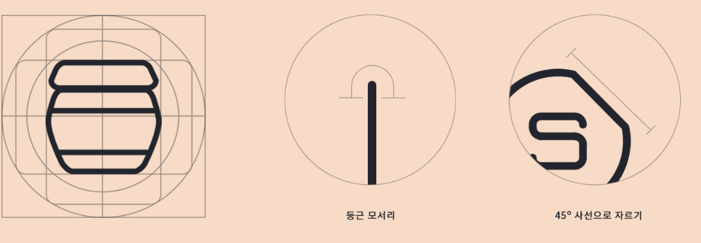

OVERVIEW
현재의 패키지 시장의 트렌드는 1인 가구에 발맞춰 간편한 혼합 양념장이나 소포장 같은 다양한
형태로 출시 되고 있습니다. 하지만 국내 소스 시장은 전통적이고 투박한 패키지 디자인을
출시하고 있습니다.
이러한 상황 속에서 소담은 어떻게 고객에게 새롭게 다가갈지 끊임없이 고민하였고 소담만의
키 비주얼로, 젊 고 신선한 패키지를 선사하고자 하였습니다.
형태로 출시 되고 있습니다. 하지만 국내 소스 시장은 전통적이고 투박한 패키지 디자인을
출시하고 있습니다.
이러한 상황 속에서 소담은 어떻게 고객에게 새롭게 다가갈지 끊임없이 고민하였고 소담만의
키 비주얼로, 젊 고 신선한 패키지를 선사하고자 하였습니다.
한국 문화를 홍보하며
신선하게 다가가는
전통장 패키지 브랜드 소담
신선하게 다가가는
전통장 패키지 브랜드 소담
“小膽” 만의
아담하고
트렌디한 한입
아담하고
트렌디한 한입
소담은
한식의 먹음직스러움과
소포장 디자인의 의미를
함축하고 있습니다.
소포장 디자인의 의미를
함축하고 있습니다.
한국 양념장의 이미지를
현대적으로 재해석한
트렌디함을 강조합니다.
현대적으로 재해석한
트렌디함을 강조합니다.
나만의 라이프 스타일을
전 세계인들과 만들어 나갑니다.
전 세계인들과 만들어 나갑니다.
Project Goal
먹음직스럽고 아담하다는 뜻의 '소담'은 한국의 전통적인 이미지를 젊고 트렌디한 패키지 디자인으로 재해석
하여 고급스럽고 현대적인 룩을 표현하고자 하였습니다.
하여 고급스럽고 현대적인 룩을 표현하고자 하였습니다.

Design principle
소담은 한국의 섬세한 이미지를 패턴으로 나타내며 경쾌한 컬러를 이용한 한국 양념장, 모던하고 고급스러운 패키지를 이용하여 고객에게
감성적 혜택을 전달할 예정 입니다.
감성적 혜택을 전달할 예정 입니다.
Logo
소담의 브랜드 심볼은 동양적인 처마와 창문에서 모티브를 얻어 제작하였으며
한글과 한자의 '소담'을 합성하여 전통적인 분위기를 새롭게 환기해 내는 것을 의미합니다.
한글과 한자의 '소담'을 합성하여 전통적인 분위기를 새롭게 환기해 내는 것을 의미합니다.
Main Color
메인 컬러로 소담 블랙, 골드,오프 화이트를 사용해 세련되고 현대적인 룩을 보여주고 트렌디한
패키지 컬러 6가지로 각자의 장을 설명하하고자 하였습니다.
패키지 컬러 6가지로 각자의 장을 설명하하고자 하였습니다.


Sub Color

Icon
전체적으로 로고의 특징, 선 가장자리에 원의 곡선 형태를 반영하여 소담의 아이콘을 제작하였
으며 위의 아이콘들은 소담의 트렌디하며 장 브랜드 아이콘이라는 점과, 장의 원료들을 기반한
소담을 대표하는 7가지 아이콘들 입니다.
으며 위의 아이콘들은 소담의 트렌디하며 장 브랜드 아이콘이라는 점과, 장의 원료들을 기반한
소담을 대표하는 7가지 아이콘들 입니다.
Icon Grid

Pattern
소담의 패턴은 로고에서 모티브를 도출해내어 타입A 에서 B로 확장하여 포장에 따라 각자
다른 사용성을 지니고 있습니다.
다른 사용성을 지니고 있습니다.

Pouch Pakage
소담의 소포장은 기존적으로 항아리의 형태를 띄고 있습니다. 소담의 소포장 패키지는 한손에
들어가는 크기로, 간단하게 뜯어 즐기실 수 있습니다.
들어가는 크기로, 간단하게 뜯어 즐기실 수 있습니다.

Big Package
소담 대포장은 캡을 사용해 원하는 만큼의 양을 사용하고 저장하실 수 있습니다.
Stick Package
스페셜 키트로, 여행, 기내에서도 간편하게 쓰고 버릴 수 있도록 구성되어 있습니다.
Box Package
소담 박스 패키지는 소포장, 대포장, 스페셜 키트 총 3가지로 구성되어 있습니다.
Application GUI
추천상품과 함께 알아보는
소담의 브랜드 개요
소담의 브랜드 개요
앱을 실행했을때 켜지는 개요 페이지 입니다.
소담이 어떤 브랜드 인지 간략하게 설명 하여 고객에게 인식시키고 그에 맞는
패키지 디자인과 무드보드를 롤링 배너로 보여줍니다.
소담이 어떤 브랜드 인지 간략하게 설명 하여 고객에게 인식시키고 그에 맞는
패키지 디자인과 무드보드를 롤링 배너로 보여줍니다.
상단에 위치한 소담 로고를 누르면
메인으로 돌아오게 됩니다.
메인으로 돌아오게 됩니다.

나만의 장을 트렌디하게
소담 쇼핑으로
소담 쇼핑으로
상품의 상세 페이지 입니다. 소담의 패키지를 개별로
확인하여 원하는 상품을 고르고 구매할 수 있습니다.
확인하여 원하는 상품을 고르고 구매할 수 있습니다.
내손으로 만든
소담 레시피
소담 레시피
나만의 레시피 페이지입니다.
소담에서 당신만의 레시피를
작성하여 저장, 공유해보세요.
소담에서 당신만의 레시피를
작성하여 저장, 공유해보세요.
Trandy Bite_SODAM
Team_SODAM